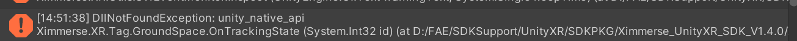
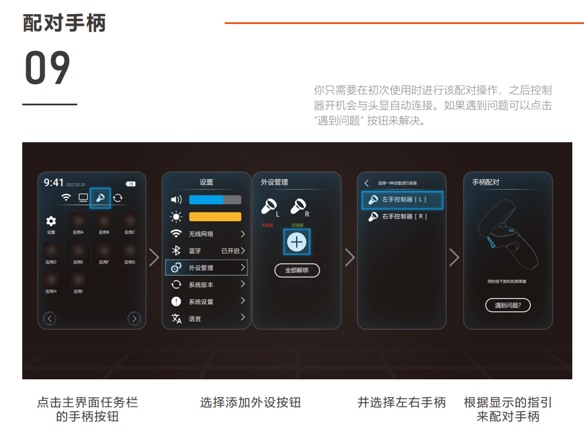
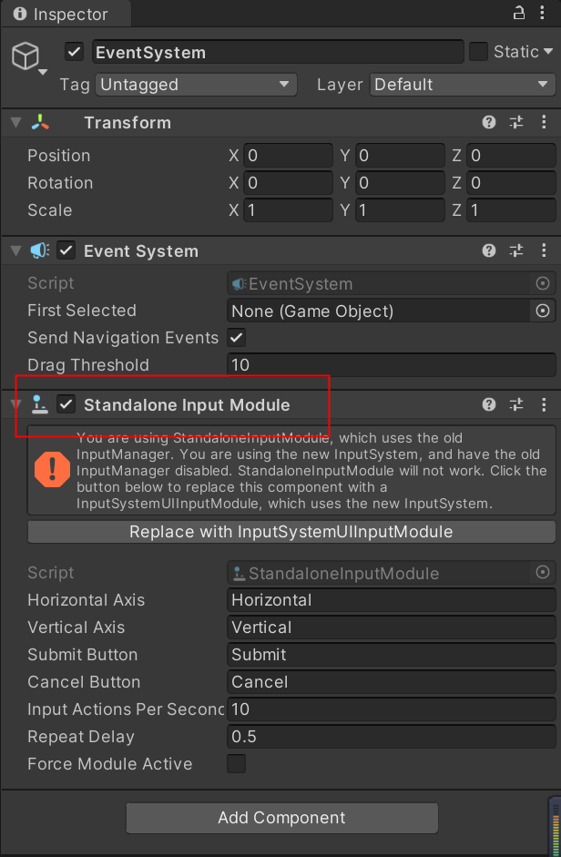
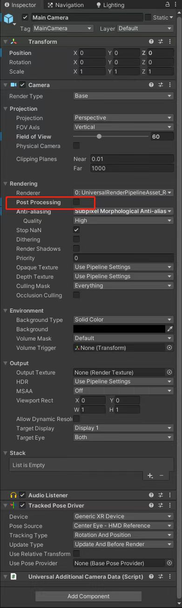
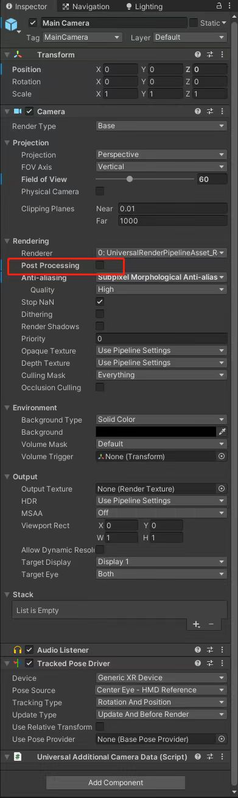
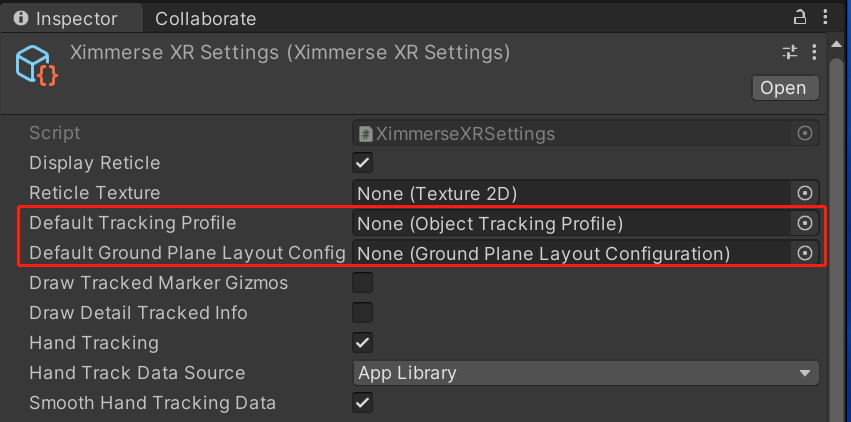

8.FAQ
1.在Unity编辑器中运行场景，提示报错未找到 unity_native_api
因为Tag相关的组件依赖头显的硬件环境，所以直接在编辑器中运行场景时会报此错误，实际不影响程序功能，可忽略。
如果您不希望在运行时报此错误，可以在运行前反选掉Tag相关的组件，如TagProgileLoading，GroundPlane
2.手柄连接不上头显
先确认手柄的指示灯是快速闪烁还是慢速闪烁（1秒一次），如果是慢速闪烁，证明手柄已经与一台头显绑定过， 需要先将手柄主动解绑，操作如下图：
Note
在主界面遗忘手柄会导致手柄断开连接，且不会在自动连接头显。但是手柄自身还是处于绑定状态（指示灯慢速闪烁） 此时会导致手柄无法再与任何手柄进行绑定。
解决办法是：将手柄主动解绑，具体操作如下，解绑后，指示灯快速闪烁，此时手柄可以正常与任意头显进行绑定
手柄指示灯变为快速闪烁，表示解除绑定成功，接下来按照提示重新配对手柄即可。
3.创建的UI无法用手柄射线交互
我们在创建常规的Unity UI Canvas时，系统会自动创建出一个 EventSystem 组件，默认的组件是不支持Unity XR交互的。
如下图EventSystem是不支持Unity XR交互的
我们可以通过如下方式进行修改
直接选择XR -> UI EventSystem，点击创建，此时原来的EventSystem会变为如下图，此时的UI就可以正常交互了
将原来的UI以及EvenSystem删除，通过以下方式重新创建UI
4.项目打包出来apk，安装到头显上闪退
XR Plug-in Management中需要勾选Ximmerse XR Plugin，没有勾选会出现闪退。使用前请务必详细查看 入门指南里面的项目设置章节部分。
5.URP项目打包出来后，在头显上场景显示发黄，被黄色背景笼罩
是因为URP下面后效（post processing）不兼容导致，取消勾选Camera下面的 Post Processing选项即可
 

6.打包出来的apk无法识别Beacon（定位信标）
是因为Ximmerse XR Setting里面的定位配置与TrackingProfile Loading的配置冲突，导致算法崩溃。将Ximmerse XR Setting里面 的定位配置设置为None即可
